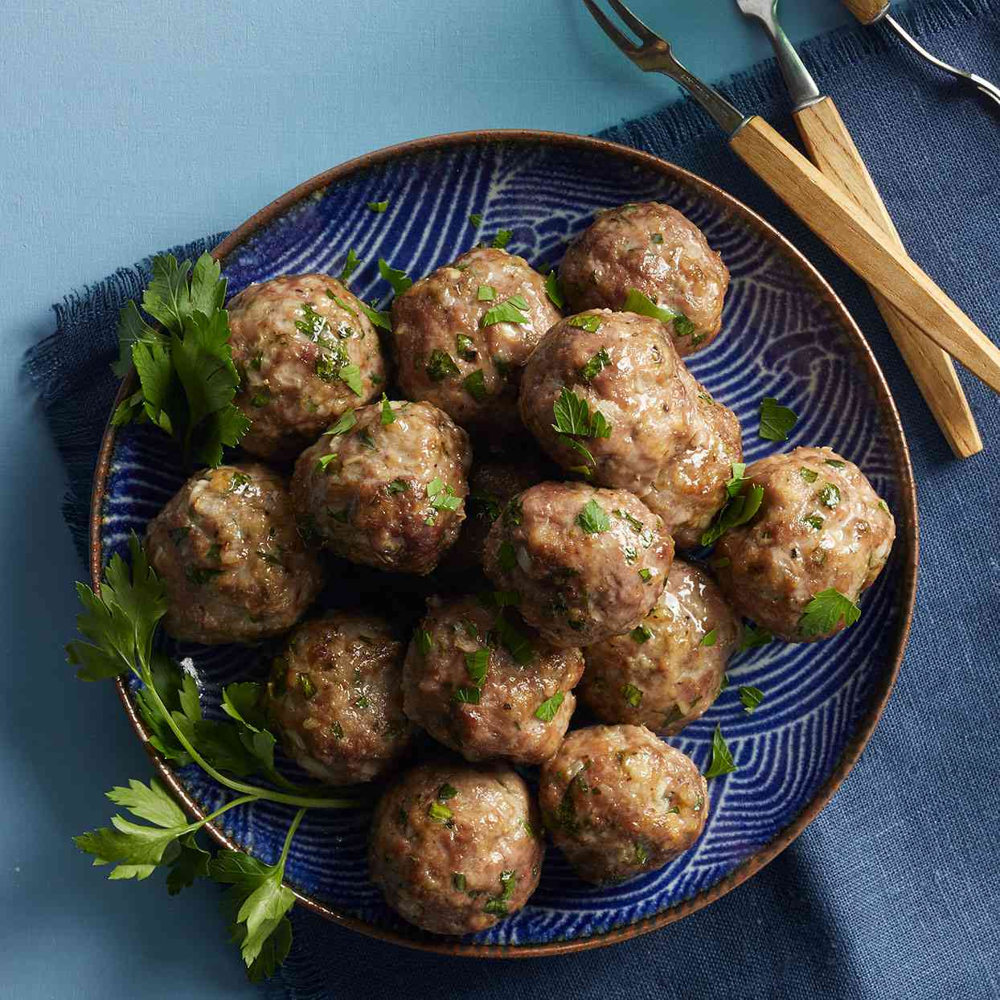

Meatballs recipe found on google
This Classic Meatballs recipe is an absolute favorite, and for great reason! All it takes to make tender, perfectly browned meatballs is 15 minutes of prep, 8 basic ingredients and a foil-lined pan. Bake to perfection, and these classic Italian meatballs could be the answer to tonight's dinner jam! Serve them with spaghetti or other noodles, rice, veggies, salad or any of your favorite dishes. This recipe truly goes with anything!
- 1 lb lean (at least 80%) ground beef
- 1/2 cup Progresso™ Italian-style Bread Crumbs
- 1/4 cup milk
- 1/2 teaspoon salt
- 1/2 teaspoon Worcestershire sauce
- 1/4 teaspoon pepper
- 1 small onion, finely chopped (1/4 cup)
- 1 egg
Steps
- Heat oven to 400°F.
- Line 13x9-inch pan with foil; spray with cooking spray.
- In large bowl, mix all ingredients.
- Shape mixture into 24 (1 1/2-inch) meatballs.
- Place 1 inch apart on pan.
- Bake uncovered 18 to 22 minutes or until temperature reaches 160°F and no longer pink in center.